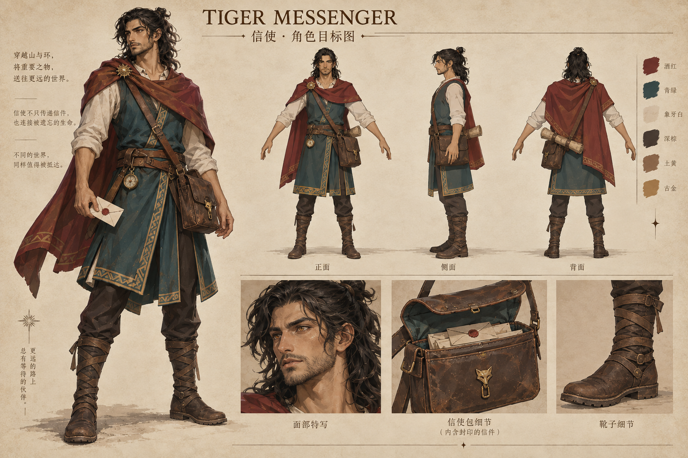
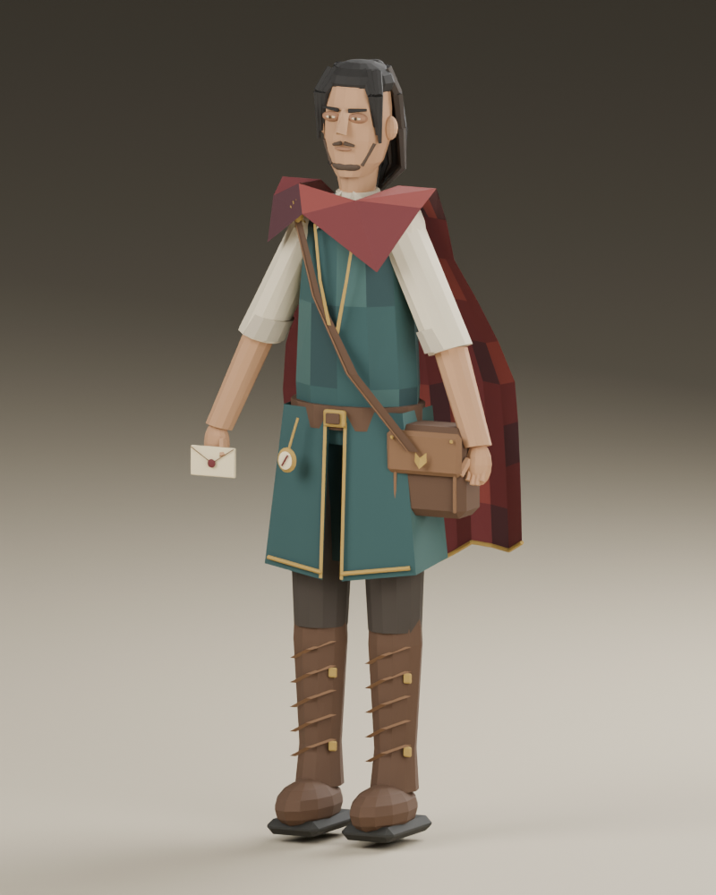
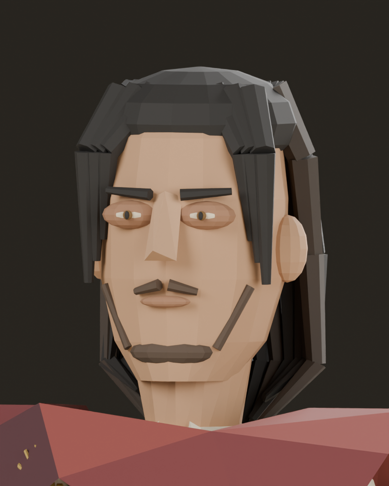
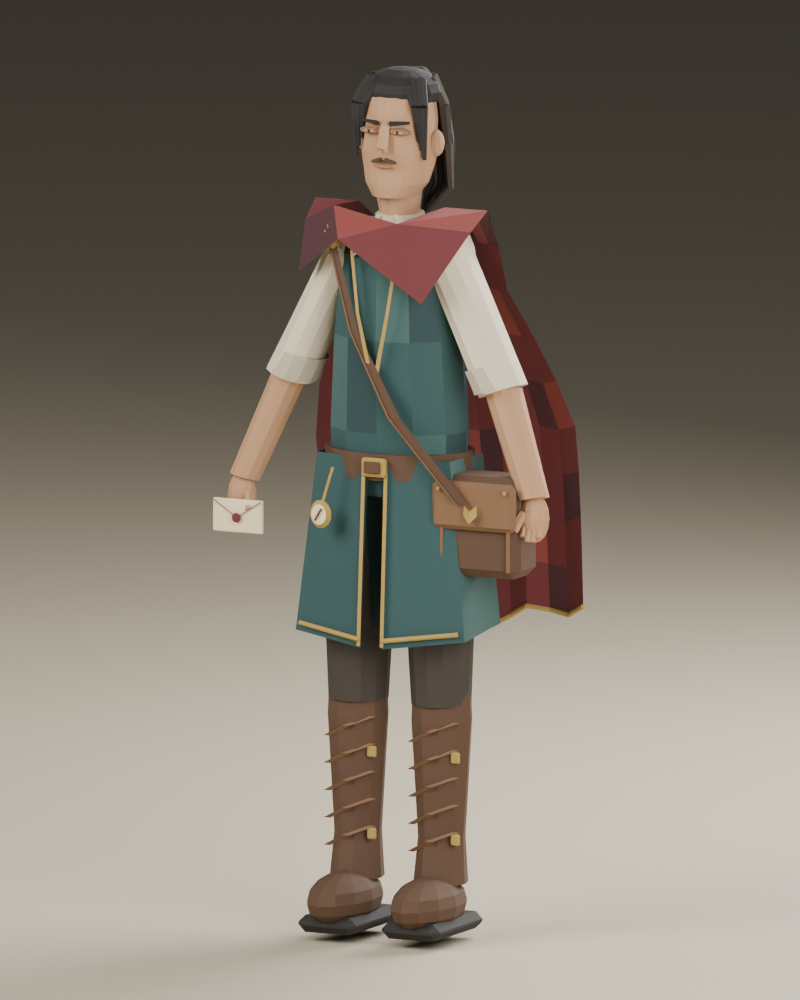
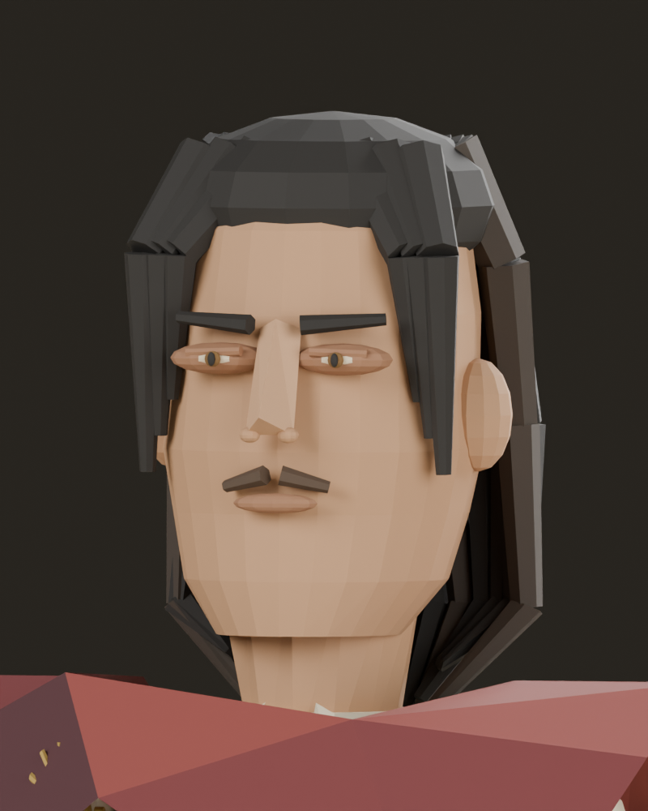
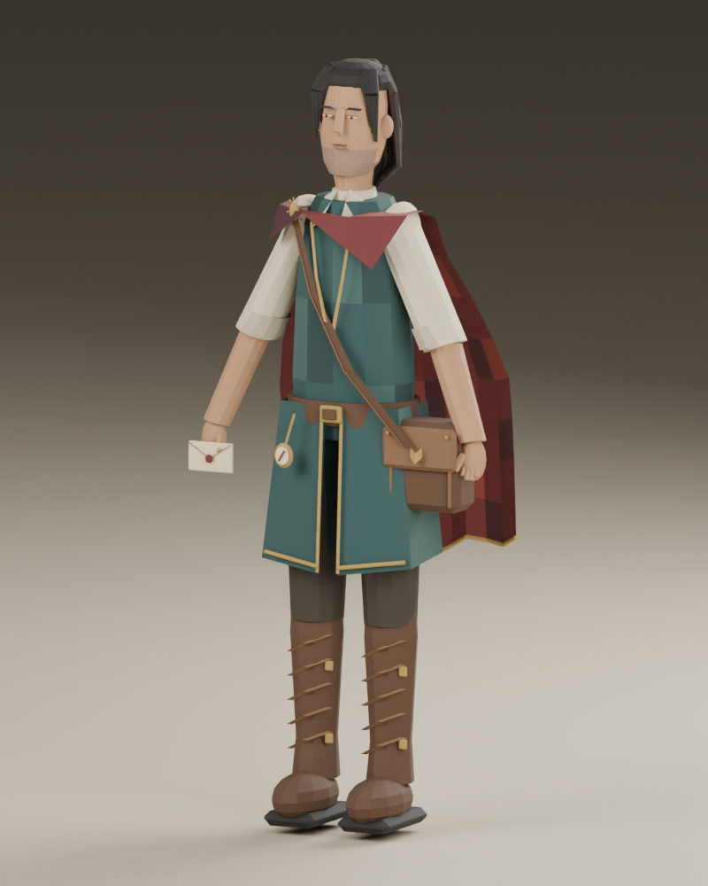
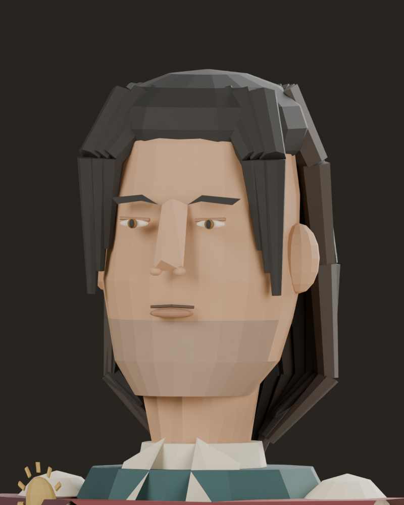

修改前

修改后

第六轮脸型尚未符合原目标。 查看重新设计的二维动作与面部结构图
新增：五种动作帧、头部六视图、五官明细及 Blender 参考工程
实际 Blender 模型渲染。收尖下巴、增加颧骨体积与颊下凹陷，调整眼白、虹膜、眉形与唇线。靴子继续保留简化版。发型与目标神态仍有差距。
本页为独立候选，未替换8931原游戏或Godot角色。
快走、前倾奔跑、低姿行走、腾空姿态与落地缓冲；站立时收臂，移动时肩部反向摆动、头部保持视线。起落按钮只演示姿态，不含位移和碰撞；尚无脚底锁定、攀爬或障碍物交互。
动作参考：Ubisoft官方跑酷系统说明。采用移动衔接、动量与落地缓冲原则，动作由本项目自行编写，未使用育碧动画文件。
以下文件为第6轮静态造型；动作在本页实时运行，尚未烘焙到GLB。本轮记录与范围








